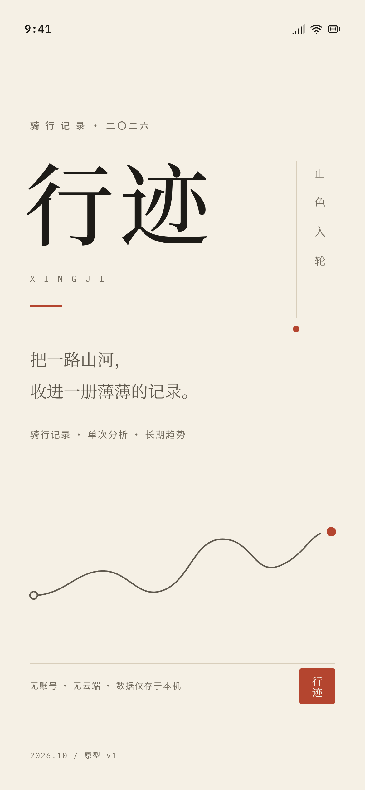
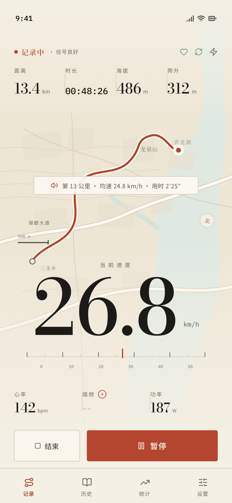
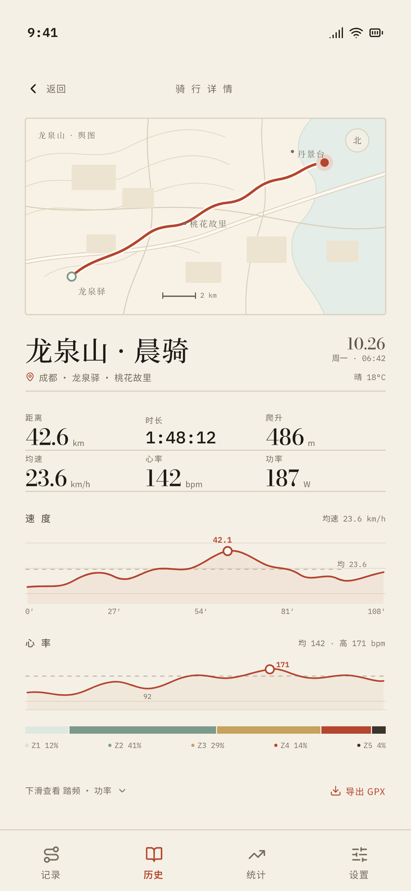
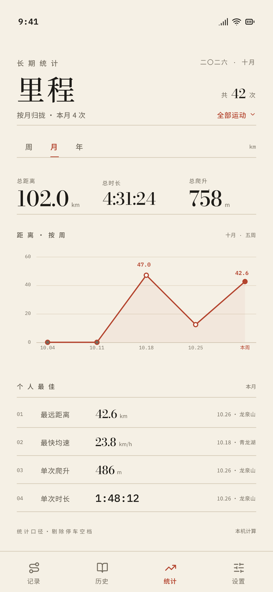
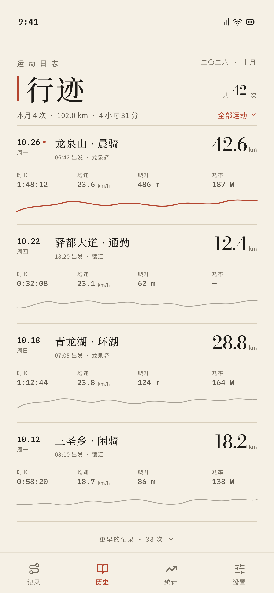

每一步、每一公里都被认真记下，不打扰、不遗漏。
地图始终正北朝上，转向由当前位置箭头承担。起点、终点与断口标记清晰可辨。
骑行中扫一眼就能读清的主指标，最大 120pt 等宽数字，横向不抖动。
速度、距离、心率、海拔、功率与卡路里，随骑行实时更新。
接入心率带等 BLE 外设，运动数据更完整。
轨迹回放、趋势图表与个人最佳，把每一次努力看得见。
GPX 轨迹导出与本地数据备份，记录永远属于你。
温暖纸色底、墨色正文、发丝线分区，没有多余的阴影与打扰。




朱砂、青瓷、黛蓝、藤黄——同一套版式，随心情换一种颜色。
#B4452F
#4F6E60
#3E5A6B
#7E5F27